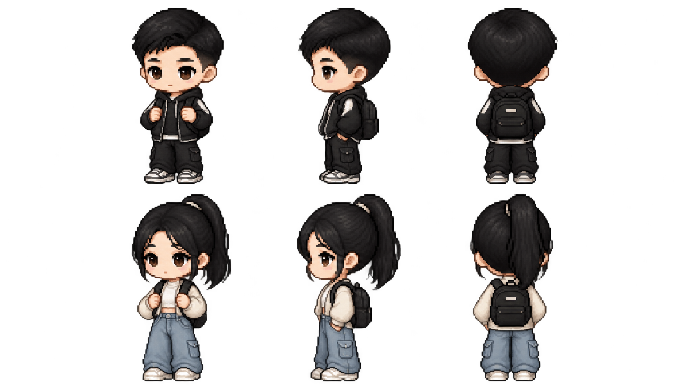

HONG KONG · FALL SEMESTER
香港，九月。
沿街区前行，靠近感叹号触发事件；点「返回上层」可随时打开香港地图。
体力
100%
港币
¥ 1,500
学分线索
0
1
港岛 · 中环
2
九龙 · 旺角
3
新界 · 大埔

4
离岛 · 南丫岛
← 返回地图
×
随身物品
此刻，你的背包还很轻。收集四张港岛地图碎片与一张八达通，即将开启真正的香港回忆。
今日任务链
香港日志
2026年9月1日，阴。
END
属于我的香港
重新开始回忆
▦
9月1日 · 周一
初秋 · 08:00
＄
HK$ 1,500